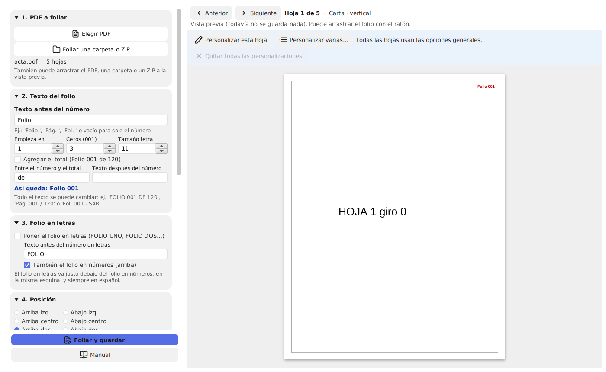
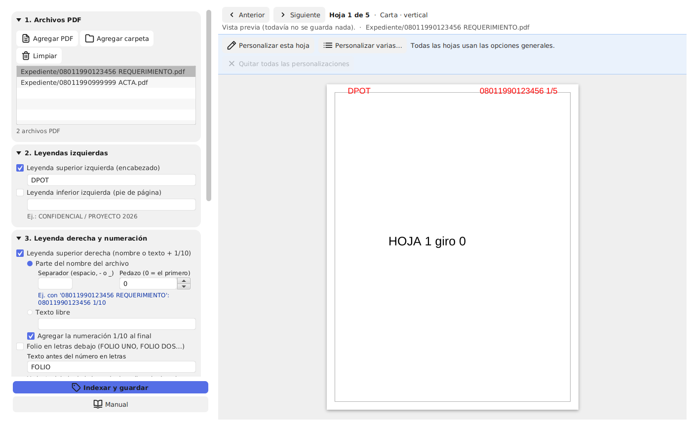
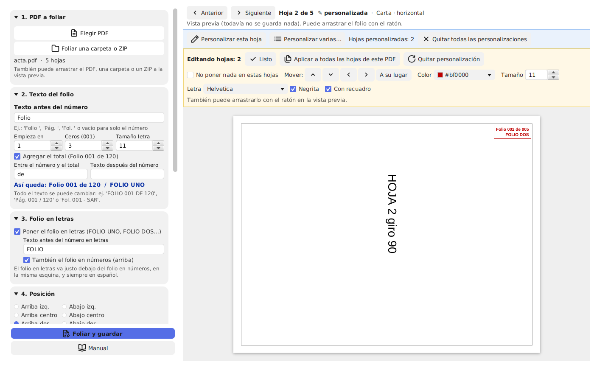
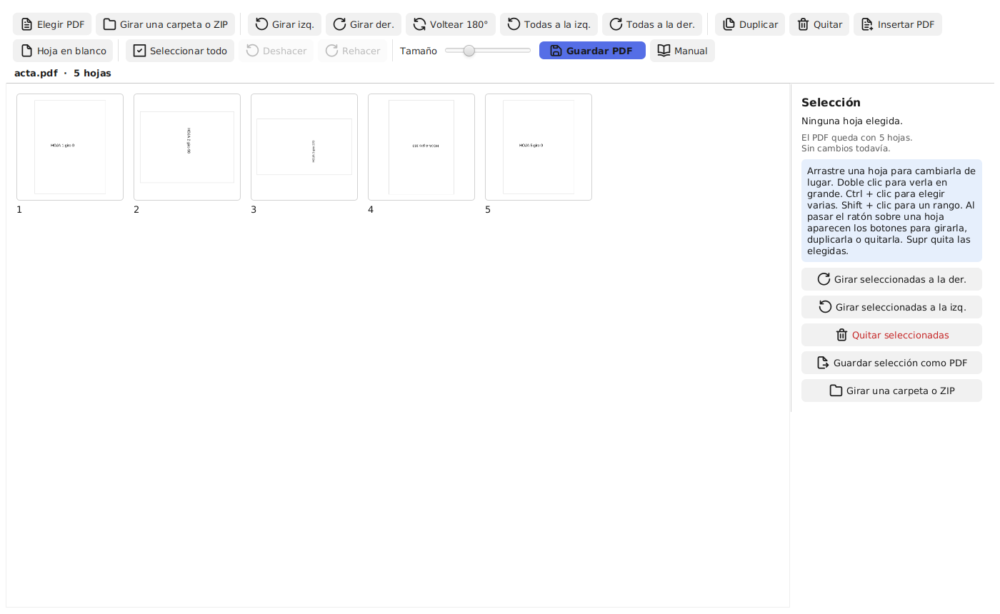
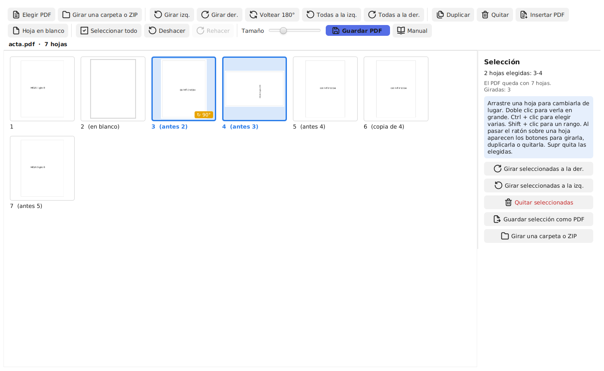

Auditoría PDF (basado en PDFsam Basic) trae dos herramientas nuevas, Foliar e Indexar PDF, y un Girar nuevo, con miniaturas. Todas tienen vista previa real: lo que ve en pantalla es exactamente lo que queda en el PDF, y se actualiza solo cada vez que cambia una opción. Los PDF originales nunca se modifican: el resultado siempre se guarda aparte.
Portable quiere decir que no se instala: se descomprime y se usa. Lo puede llevar en una USB.
Auditoria-PDF-portable.zip.Documentos\Auditoria PDF) → Extraer.Auditoria PDF y haga doble clic en AuditoriaPDF.exe. Ahí mismo está este manual.Este manual también está dentro del programa: en el menú del programa toque Manual (Foliar, Indexar, Girar), o el botón Manual que tiene cada una de las tres herramientas.
Para regresar al Inicio desde cualquier herramienta, toque el botón ← Inicio que está arriba, en todas las pantallas.
Para crear un acceso directo: clic derecho sobre pdfsam.exe → Enviar a → Escritorio (crear acceso directo).
Foliar pone la numeración tipo folio (Folio 001, Folio 002…) en cada hoja. Cada hoja lleva el folio en la misma esquina tal como se lee, aunque la hoja esté girada o sea de otro tamaño (carta, oficio, horizontal…).

A la derecha aparece la primera hoja ya con el folio. Con ◀ Anterior y Siguiente ▶ recorre las hojas. Al lado se ve el tamaño de la hoja (ej. Carta · vertical).
| Opción | Qué hace | Ejemplo |
|---|---|---|
| Texto antes del número | Lo que va antes del número. Puede dejarlo vacío para que salga solo el número. | Folio , Pág. , Fol. |
| Empieza en | El primer número. | Si el expediente ya tiene 120 folios, ponga 121. |
| Ceros (001) | Cuántas cifras lleva el número (rellena con ceros a la izquierda). | 3 → 001 · 4 → 0001 |
| Tamaño letra | El tamaño de la letra del folio. | 11 |
| Agregar el total | Agrega el total al final. | Folio 001 de 120 |
| Entre el número y el total | La palabra entre el número y el total. | de, DE, / |
| Texto después del número | Lo que va al final. | - SAR |
Debajo aparece “Así queda: …” con un ejemplo de cómo se verá.
Marque Poner el folio en letras para escribirlo como FOLIO UNO, FOLIO DOS… (siempre en español, en mayúsculas, con tildes: VEINTITRÉS, CIENTO VEINTIUNO…).
FOLIO .Elija la esquina: arriba o abajo, a la izquierda, al centro o a la derecha.
Toque Rojo, Negro o Azul, o elija cualquier otro en Más colores. Debajo se ve el color elegido con su código (ej. #BF0000).
Ver la sección Letras.
Vacío = todas. Puede escribir rangos: 3-50, 1-10, 15, 20- (20- quiere decir “de la 20 hasta el final”).
_foliado al final. Al terminar puede tocar Abrir el PDF o Abrir la carpeta.Sirve para foliar muchos PDF de una vez, por ejemplo un expediente con subcarpetas.
Qué se respeta: la misma estructura de carpetas y subcarpetas (también las vacías), los comprimidos (ZIP, RAR, 7z…) que vengan dentro de la carpeta o dentro de otro comprimido (se abren, se folian sus PDF y se vuelven a armar como ZIP), y todo lo que no es PDF se copia igual. Si un archivo falla, se copia el original sin cambios y se avisa al final.
Indexar pone leyendas en rojo (o el color que elija) en cada hoja de muchos PDF a la vez:
DPOT).CONFIDENCIAL).1/10.
_indexado al final, con todo lo que traía). También puede arrastrarlos a la lista o a la vista previa. Limpiar vacía la lista.
Haga clic en un archivo de la lista para verlo en la vista previa.Marque y escriba el texto de arriba a la izquierda (encabezado) y, si quiere, el de abajo a la izquierda (pie de página).
Parte del nombre del archivo: el nombre se corta en pedazos con el separador y se usa el pedazo que elija (0 = el primero).
| Nombre del archivo | Separador | Pedazo | Queda |
|---|---|---|---|
| 08011990123456 REQUERIMIENTO.pdf | espacio | 0 | 08011990123456 1/10 |
| ACTA 2025 enero.pdf | espacio | 1 | 2025 1/10 |
| REQ_SAR_08011990123456.pdf | _ | 2 | 08011990123456 1/10 |
Debajo del separador aparece un ejemplo con el archivo que está viendo. Si el nombre no tiene el separador, se usa el nombre completo.
{pagina} y {total}, ej. Hoja {pagina} de {total}).Igual que en Foliar (ver Letras). El tamaño normal es 20.
3-50: solo esas hojas llevan leyendas, y la numeración cuenta solo esas. Vale para todos los PDF de la lista (si un PDF es más corto, se usan las hojas que tenga).Las opciones de Indexar (y de Foliar) se recuerdan para la próxima vez.
Lo general se aplica a todas las hojas. Con Personalizar hojas cambia solo algunas, por ejemplo una hoja donde el folio tapa una firma.
5, 8-12).
En Indexar, cada PDF de la lista tiene sus propias hojas personalizadas.
Cambio de letra: si después de personalizar cambia la letra general (o la negrita), el cambio se aplica a todas las hojas, también a las personalizadas y a las de los otros PDF de la lista. Para que una hoja tenga otra letra, cámbiela al final desde su personalización.
arial negrita. Esas letras ya traen su versión “Negrita”, por eso la casilla Negrita se apaga.El Girar ahora es interactivo: ve todas las hojas en pequeño (miniaturas) y las gira viéndolas, una por una, varias o todas. Además puede quitar hojas, duplicarlas, cambiarlas de lugar, insertar otro PDF u hojas en blanco y guardar solo las hojas elegidas como un PDF nuevo. El PDF original no se toca: se guarda una copia.

| Para… | Haga esto |
|---|---|
| Elegir una hoja | Un clic sobre ella (queda con borde azul). |
| Elegir varias sueltas | Ctrl + clic en cada una. |
| Elegir un rango (de la 3 a la 10) | Clic en la 3, después Shift + clic en la 10. |
| Elegir todas | Ctrl + A o el botón Seleccionar todo. |
| Quitar la selección | Clic en un espacio vacío entre las hojas. |
A la derecha, en Selección, dice qué hojas eligió y cuáles ya están giradas.

Cada hoja girada muestra una etiqueta amarilla con los grados (ej. ↻ 90°).
| Para… | Haga esto |
|---|---|
| Quitar (eliminar) hojas | Pase el ratón sobre la hoja y toque el botón del basurero. Para varias: elíjalas y toque Quitar (arriba), Quitar seleccionadas (a la derecha) o la tecla Supr. Si se equivocó: Deshacer. |
| Duplicar una hoja | Botón de dos hojitas sobre la hoja, o elija varias y toque Duplicar. La copia queda justo al lado y dice (copia de 3). |
| Insertar otro PDF | Elija la hoja después de la cual quiere meterlo y toque Insertar PDF. Si no elige ninguna, va al final. También puede arrastrar el otro PDF a la pantalla y elegir Insertar sus hojas. Esas hojas dicen debajo de qué PDF vienen. |
| Hoja en blanco | Elija la hoja de antes y toque Hoja en blanco. Sale del mismo tamaño que la hoja de al lado. |
| Guardar selección como PDF | Elija las hojas que quiere sacar y toque Guardar selección como PDF (a la derecha). Se crea un PDF nuevo solo con esas hojas (con sus giros); el resto no cambia. |
A la derecha siempre dice con cuántas hojas quedará el PDF.
_girado.Foliar, Indexar y Girar abren casi cualquier archivo comprimido: ZIP, RAR (también los nuevos RAR5 y los que vienen en partes), 7z (también en partes .001, .002…), TAR, TAR.GZ / TGZ, GZ, BZ2, XZ, LZMA, Z, CAB, ISO, ARJ, LZH, CPIO, RPM, DEB, WIM, XAR.
Si un comprimido viene en partes (Expediente.part1.rar, Expediente.part2.rar… o Expediente.7z.001, .002…), elija la primera parte y deje todas las partes juntas en la misma carpeta.
Las leyendas de Indexar son cinco: Arriba a la izquierda, Abajo a la izquierda, Arriba a la derecha, Número en letras y Numeración de abajo. Cada una se puede correr sola, sin que se muevan las demás. Hay dos formas:
-20) se corre a la izquierda.Si está en Personalizar hojas y arrastra fuera de una leyenda, se mueven todas juntas como antes.
Normalmente el folio y las leyendas quedan fijos en la hoja: nadie los puede cambiar. Si marca Texto editable en Adobe (Rellenar y firmar), quedan como casillas que ya traen el texto escrito: se ven y se imprimen igual, pero en Adobe se pueden corregir.
No. Siempre se guarda una copia nueva. En Foliar, si elige el mismo nombre del original, el programa no lo deja. En Indexar no deja elegir la carpeta de los originales.
Sí. La vista previa usa exactamente la misma función que se usa al guardar.
Con el botón ← Inicio que aparece arriba en todas las herramientas, o con Inicio en el menú de la izquierda.
No. Todo se hace en su computadora; los PDF no salen a ningún lado.
No. El programa portable ya trae todo lo que necesita adentro.
No. Sale porque el programa no tiene una firma digital comprada. Toque Más información → Ejecutar de todas formas.
Sí: Unir, Dividir, Extraer, Mezclar, etc. funcionan igual que siempre. Se agregaron Foliar e Indexar PDF, y Girar ahora es con miniaturas.
En la carpeta de su usuario, en .pdfsam-foliado\opciones.properties. Si borra ese archivo, todo vuelve a lo normal.
Foliar e Indexar se hicieron en español. El resto del programa sigue el idioma que tenga elegido en Ajustes.
No. Cada hoja lleva el folio en la misma esquina tal como se lee, aunque esté girada o sea de otro tamaño.
En 7. Más opciones → Hojas sin folio al inicio ponga 1. La hoja 2 será el Folio 001 (o el número de “Empieza en”).
Vaya a esa hoja → Personalizar esta hoja → marque No poner nada en estas hojas → Listo. Esa hoja no lleva folio y la siguiente sigue el número.
“Hojas sin folio al inicio” salta las primeras hojas. “Hojas a foliar” elige exactamente qué hojas llevan folio (ej. 3-50); las demás quedan sin folio.
Personalice esa hoja y muévalo con las flechas o arrastrándolo con el ratón en la vista previa. Las demás hojas no cambian.
Texto antes del número: FOLIO ; marque Agregar el total; Entre el número y el total: DE.
Sí: ponga 251 en Empieza en.
Marque Poner el folio en letras y desmarque También el folio en números.
En orden de carpetas y nombres (alfabético), igual que en el árbol de la vista previa. Si quiere otro orden, ponga números al inicio de los nombres (01, 02, 03…).
Se copian sin cambios y al final el programa pregunta si les quita la seguridad con su contraseña y si también los folia. Si no sabe la contraseña, quedan como el original.
Sí, con Cancelar. Lo que ya se hizo queda guardado.
Se copian igual, en la misma subcarpeta.
ZIP, RAR (también RAR5 y en partes), 7z (también en partes), TAR, TAR.GZ, TGZ, GZ, BZ2, XZ, LZMA, Z, CAB, ISO, ARJ, LZH, CPIO, RPM, DEB, WIM y XAR. En Foliar, Indexar y Girar.
No, es a propósito. Crear RAR solo se puede con WinRAR, que es de pago. El ZIP trae exactamente las mismas carpetas y archivos, y se abre en cualquier computadora.
El programa se la pide al abrirlo. Si se equivoca, la vuelve a pedir. Si no la sabe, toque Cancelar y ese archivo se copia tal cual.
Ponga todas las partes en la misma carpeta y elija solo la part1 (o la .001 en los 7z). El programa busca las demás solo.
También se abre. Cada comprimido de adentro queda en el resultado como un ZIP con el mismo nombre.
Puede estar dañado o incompleto (por ejemplo, falta una de sus partes). Se copia tal cual y se avisa al final. Pruebe abrirlo en su computadora para ver si está bien.
Guarde con Texto editable en Adobe (Rellenar y firmar) marcado. En Adobe → Rellenar y firmar → clic en el folio → escriba.
Revise que lo guardó después de marcar la opción (los PDF hechos antes quedan fijos). Si el PDF se “aplanó” o se imprimió como PDF, las casillas se vuelven texto fijo.
Sí, cualquiera con Adobe puede. Si quiere que nadie lo cambie, deje la opción sin marcar (así queda fijo, como siempre).
Algunas letras no se pueden usar en las casillas; entonces se usa Helvetica. Si quiere que se vea idéntico al editar, use Helvetica, Times o Courier.
El nombre del archivo se corta donde está el separador. El pedazo 0 es lo que está antes del primer separador, el 1 lo que sigue, y así. Vea los ejemplos de la tabla del paso 3.
Debajo del separador aparece “Ej. con ‘nombre del archivo’: …” y en la vista previa se ve en la hoja.
Sí. Si agregó una carpeta, en la salida se crea esa misma carpeta con sus subcarpetas y los mismos nombres de archivo.
Porque ahí adentro están los PDF originales y se reemplazarían. Elija o cree una carpeta nueva.
Sí. Elija el PDF en la lista y personalice sus hojas; cada PDF guarda las suyas.
En 5. Más opciones ponga 1 en Hojas sin leyendas al inicio. La numeración empieza en 1 en la hoja siguiente.
Suba Distancia de los lados o Distancia de arriba y abajo en 5. Más opciones. En la vista previa se ve el cambio al momento.
Ahora sí cambia: la letra general se aplica a todas las hojas, también a las personalizadas.
Arrástrela con el ratón en la vista previa y elija Solo en esta hoja o En todas las hojas. O en 5. Más opciones → Mover cada leyenda por separado, escriba cuántos puntos se corre. Ver Mover cada leyenda.
Si fue en todas las hojas: Poner todas en su lugar en 5. Más opciones (o ponga 0 en sus casillas). Si fue solo en una hoja: en esa hoja use Personalizar hojas → A su lugar, o quite la personalización de esa hoja.
Tiene que apretar justo encima del texto de la leyenda. Si aprieta en otra parte de la hoja mientras está en Personalizar hojas, se mueven todas juntas.
Sí: marque Repetir la numeración abajo y elija el formato, o “Personalizado…” y escriba lo que quiera con {pagina} y {total}.
Se cambió por este, con miniaturas. Lo que hacía el de antes (girar muchos PDF de una vez) se hace con Girar una carpeta o comprimido.
No. Solo se cambia el giro de la hoja; las imágenes y el texto quedan exactamente igual.
Con Deshacer (Ctrl + Z), o girándola al otro lado.
En PDF muy grandes se van cargando poco a poco, primero las que está viendo. Puede girar aunque una miniatura todavía no aparezca.
Sí. Todo se guarda junto al tocar Guardar PDF.
No: siguen apuntando a la misma hoja, esté donde esté.
Toque Deshacer (Ctrl + Z). Mientras no guarde, puede deshacer todo lo que hizo.
Solo funciona después de hacer clic en las miniaturas, y solo quita las hojas elegidas (con borde azul). Igual se puede deshacer.
No. La copia usa el mismo contenido de la hoja original, no lo repite; el PDF casi no aumenta de peso.
Sí, el programa le pide la contraseña al insertarlo.
“Guardar PDF” guarda todas las hojas tal como las ve. “Guardar selección como PDF” guarda solo las hojas elegidas, en un PDF aparte.
No, tiene que quedar con al menos una.
Póngalos en una carpeta y use Girar una carpeta o ZIP.
Sí. Es software libre: está basado en PDFsam Basic, que se publica con la licencia GNU AGPL v3, y Auditoría PDF se publica con la misma licencia. Se puede instalar en todas las computadoras sin pagar licencias. El código fuente está publicado (ver "Acerca de" en el programa) y viene en la carpeta "Codigo fuente".
Porque la licencia pide reconocer el programa original y dejar sus avisos. El nombre y el logo de PDFsam son de sus autores, por eso esta versión tiene nombre y logo propios.
Se buscan las letras .ttf de Windows (incluidas las instaladas solo para su usuario). Algunas letras .otf no se pueden usar dentro del PDF. Escriba parte del nombre en el buscador.
Esa letra no se pudo incluir en el PDF (algunas letras no lo permiten). Pruebe con otra.
La negrita solo aplica a las tres letras básicas (★). En las letras de la computadora elija la versión que dice “Negrita” en la lista.